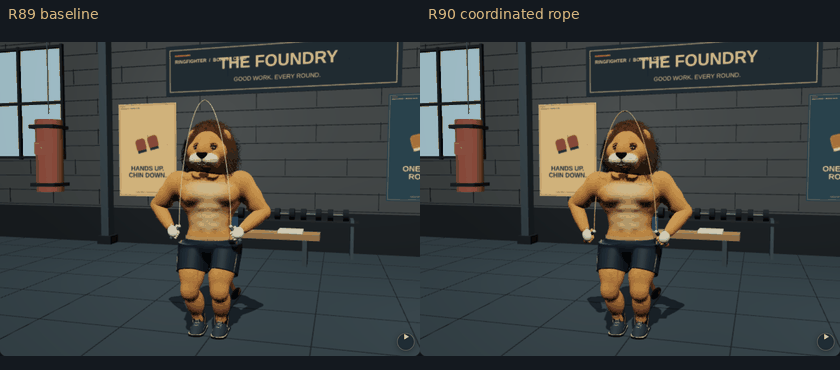
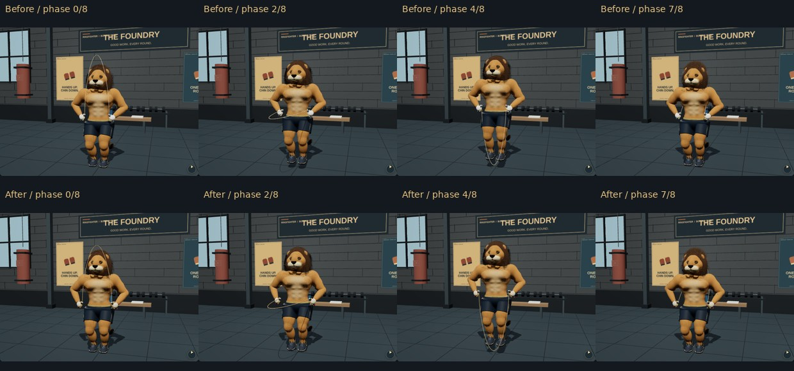
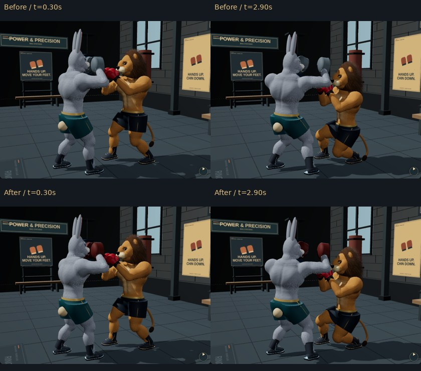
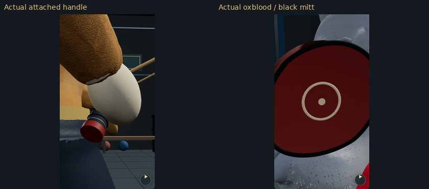
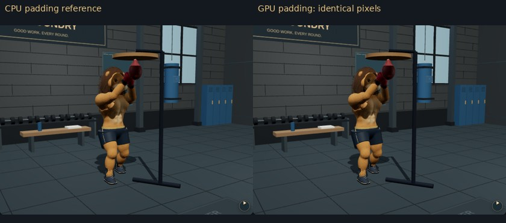

Actual app renders. These authored motions are not motion capture. Phone hardware FPS/thermal behavior remains unverified. Methods · Exact validation

Eight keyframes per revolution, slowed about 2× for review. This is not a real-time FPS recording.

Matched camera, scene and rope phases. Knees, hips, shoulders, head, ankles and wrists share the action clock.

Oxblood/red padding, black straps and contrasting binding separate the mitts from the animal coat.

Actual attached equipment viewed close up; no generated concept art.

Forced glove pressure and speed-bag dent: CPU/GPU pixels match in the tested WebGL1 and WebGL2 scenes, including shadows. This demonstrates deformation compatibility, not a new character sculpt.